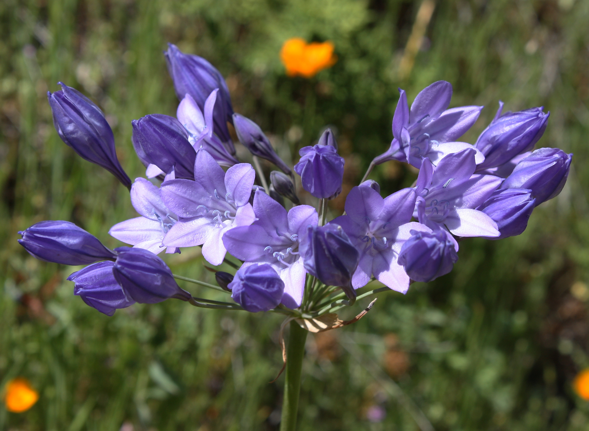
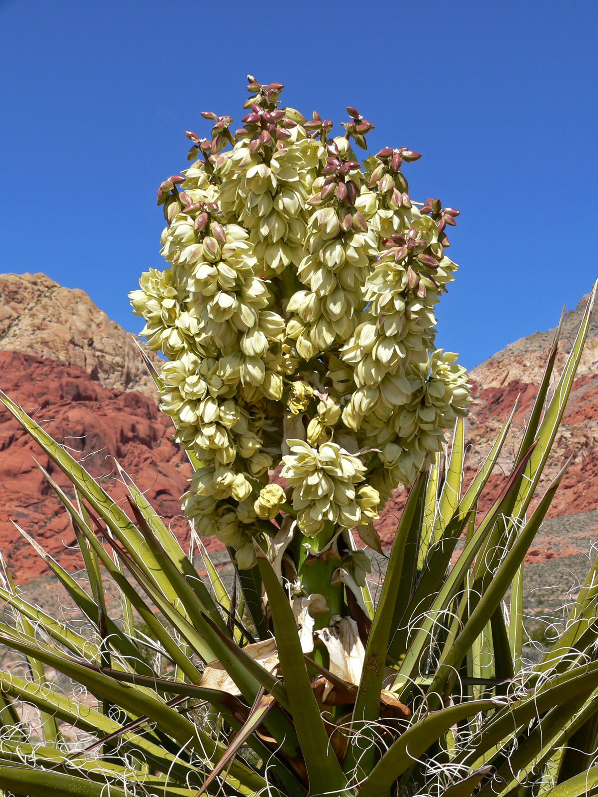
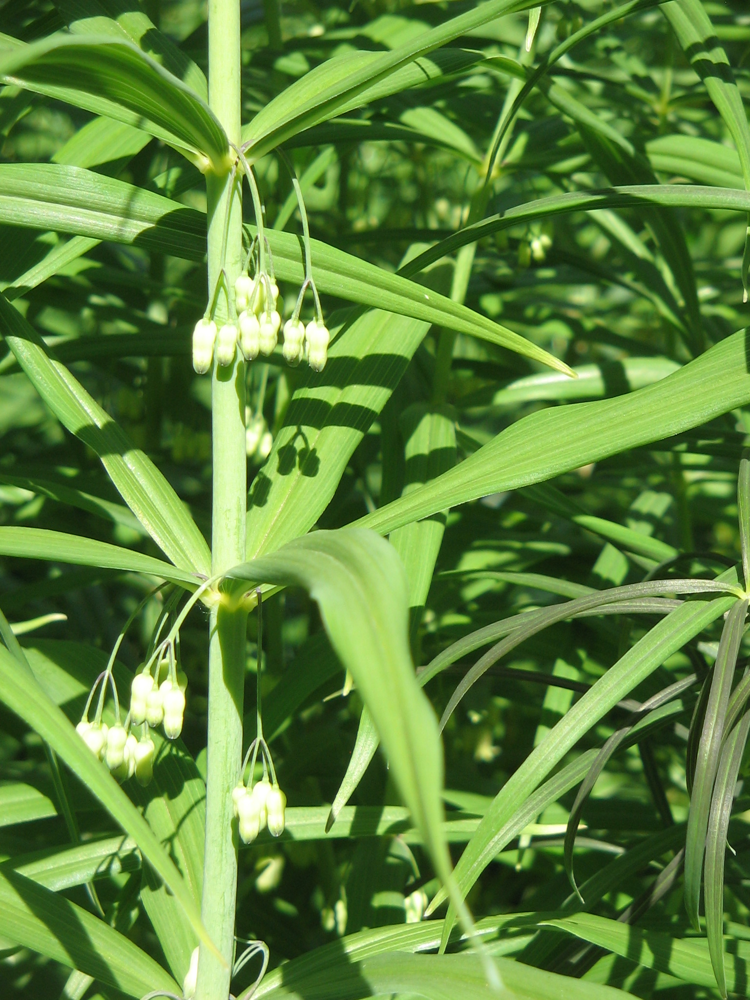

Asparagaceae
asparagus family
 Asparagus officinalis (asparagus), in the Asparagoideae subfamily from Wikimedia Commons by SriMesh - Own work, CC BY-SA 3.0 |
 Triteleia laxa (Ithuriel's spear), in the Brodiaeoideae subfamily from Wikimedia Commons by First Light (talk) - I created this work entirely by myself, CC BY 3.0 |
 Convallaria majalis (lily-of-the-valley), in the Convallarioideae subfamily from Wikimedia Commons by Ivar Leidus - Own work, CC BY-SA 4.0 |
 Yucca schidigera (yucca), in the Agavoideae subfamily from Wikimedia Commons by Stan Shebs, CC BY-SA 3.0 |
{kind=link}
{kind=link}
botanical characteristics
Botany in a Day, p. 197-99 | "Scilloideae", Wikipedia
- overal characteristics
- monocots
- in breaking up the old Liliaceae (lily) family ito smaller families with more closely related plants, taxonomists defined the asparagus, brodiaea, beargrass, and agave families, which are all currently listed as subfamilies under the Asparagaceae family (along with two other subfamilies)
- this conglomerate family lacks any obvious patterns for identification, but the subfamilies have some distinctions
- overall, Asparagaceae plants typically have lily-like flowers: 3 sepals and 3 petals that are similar in size and color, plus 6 stamens and a 3-parted pistil
- Asparagoideae (asparagus) subfamily
- fern-like, feathery branches instead of leaves for photosynthesis
- fruit is a berry
- Brodiaea (brodiaea) subfamily
- lily-like flowers
- many species have fused petals (at least at the base), forming tubular flowers
- colors range from white to blue to purple (rarely, red or yellow)
- flowers typically grouped in umbels
- leaves and flowers somewhat similar to onions (Allium); Brodiaeas produce a starchy corm instead of a bulb
- Nolinoideae (beargrass) subfamily
- lily-like flowers
- some species have united petals forming bell-shaped or tubular flowers
- some species (e.g., Nolina, Dasylirion) have fruit that resemble the buckwheat family and vegetation that resembles the agave subfamily of Asparagaceae
- no good pattern to identify this subfamily
- Agavoideae (agave) subfamily
- mostly have basal leaves with a central flower stalk, sometimes with additional leaves alternating up the stalk
- most species have the base or bulb of the plant (if present) surrounded by a fibrous brown layer
- desert-dwelling species have tough, fibrous, sharp-tipped leaves (e.g., Agave, Yucca)
- some superficial similarities with the beargrass subfamily
- Scilloideae subfamily
- 6 tepals and 6 stamens with a superior ovary
- leaves are fleshy and mucilaginous arranged in a basal rosette, alternate and spiral, simple, margin entire, with parallel venation, sheathing at the base, without stipules and hair simple
- flowers are arranged in scapiflorous inflorescences and often showy
distribution
"Asparagaceae", Wikipedia
- Asparagaceae has a cosmopolitan distribution, with genera and species contained in the family native to all continents except Antarctica
- as of November 2024, the Asparagaceae includes about 119 genera and 3,170 accepted species worldwide
"Brodiaeoideae", Wikipedia
- native to Central America and western North America, from British Columbia to Guatemala
- recent treatments have divided Brodiaeoideae into 12 genera
"Agavoideae", Wikipedia
- about 640 species are placed in around 23 genera
- widespread in the tropical, subtropical, and warm temperate regions of the world
"Scilloideae", Wikipedia
- widely but discontinuously distributed
- genera found in western South America, Africa south of the Sahara and parts of the Arabian Peninsula, on both sides of the Mediterranean, further north in Europe through the Middle East to India, and on the east coast of Asia, in China, Korea and Japan
- found in temperate to tropical habitats, but are more diverse in areas of Mediterranean climate
- number of genera varies widely from source to source, from about 30 to about 70
ecological roles
"Asparagus (genus)", Wikipedia
- root tubers are storage organs developed by Asparagus species and are a valuable source of moisture and nutrition for species growing under drought conditions
- several species are considered invasive due to their ability to completely overtake other, unrelated plants in their immediate surroundings, often climbing up the larger ones and strangling them, eventually cutting off the plant's flow of energy and nutrients
- birds are attracted to the red berries after blooming, transporting their seeds
"Scilloideae", Wikipedia
- showy flowers of many species of the subfamily are pollinated by a wide range of insects including bees, wasps, flies and moths, as well as birds
- both nectar and pollen act as incentives to pollinating species
- dispersal of seeds may occur by water, wind, or by ants attracted by elaiosomes
common pharmacological constituents
"Angiosperm families - Asparagaceae Juss.", DELTA
- former Liliaceae, Asparagaceae-Asparagoideae of APG III et al.
- not cyanogenic; alkaloids absent; arbutin absent; saponins/sapogenins present (steroidal); proanthocyanidins absent; flavonols present, or absent; kaempferol, or kaempferol and quercetin; ellagic acid absent
"Angiosperm families - Alliaceae J.G. Agardh", DELTA
- former Liliaceae, combining Amaryllidaceae-Agapanthoideae and -Allioideae with Asparagaceae-Brodiaeoideae of APG III et al.
- cyanogenic (?), or not cyanogenic; alkaloids absent; saponins/sapogenins present; proanthocyanidins absent (12 species); flavonols present (mostly), or absent (e.g. Agapanthus); kaempferol, or kaempferol and quercetin; ellagic acid absent
"Angiosperm families - Ruscaceae Spreng.", DELTA
- former Liliaceae, Asparagaceae-Nolinoideae of APG III
- not cyanogenic; alkaloids absent (?); anthraquinones detected (Ruscus); polyacetate derived; saponins/sapogenins present (steroidal); proanthocyanidins absent; flavonols present (Danaë), or absent (Ruscus, Semele); in Danaë, kaempferol and quercetin; ellagic acid absent
"Angiosperm families - Agavaceae Endl.", DELTA
- Asparagaceae-Agavoideae p.p., former Liliaceae
- CAM recorded directly in Agave, Hesperaloë, Polianthes, Yucca (non-succulent); accumulated starch other than exclusively ‘pteridophyte type’; not cyanogenic; alkaloids absent (?); saponins/sapogenins present (richly, steroidal, including those of Agave and Yucca which constitute active principles of contraceptive pills); proanthocyanidins absent; flavonols present (Agave), or absent; in Agave, kaempferol; ellagic acid absent
"Angiosperm families - Hyacinthaceae J.G. Agardh", DELTA
- inulin recorded; cyanogenic (Albuca); alkaloids absent; saponins/sapogenins present (often abundantly); proanthocyanidins absent; flavonols present, or absent; when present, kaempferol, or kaempferol and quercetin; ellagic acid absent
patterns in medicinal actions
- wide diversity even within subfamilies; patterns difficult to identify, but painting with broad strokes:
- nutritive: tubers formed by Asapargoideae and Agavoideae plants
- anti-inflammatory: Asparagus officinalis, A. racemosus, Polygonatum multiflorum
- potential action on reproductive/endocrine systems: Asparagus racemosus, many genera contain steroidal saponins
traditional/cultural uses
"Asparagaceae", Wikipedia
- this family includes both common garden plants as well as common houseplants
- garden plants include asparagus, yucca, bluebell, lily-of-the-valley, and hosta
- houseplants include snake plant, corn cane, spider plant, and plumosus fern.
"Asparagus", Wikipedia | "Polygonatum", Wikipedia
- asparagus is widely cultivated as a vegetable crop, its young shoots are used as a spring vegetable
- many species of Polygonatum used as food in India and China
"Agavoideae", Wikipedia | "Angiosperm families - Agavaceae Endl.", DELTA
- Agave species are used to make tequila, pulque, and mezcal, while others are valued for their fibers
- many Agave and Yucca species yield useful fibres (sisal hemp, henequen, pita, istle, ixtle, lechuguilla, keratto, etc.)
"Dracaena draco", Wikipedia | "Polygonatum", Wikipedia | "Lily of the valley", Wikipedia | "Scilloideae", Wikipedia
- resin of Dracaena draco used to make dragon's blood, which has many traditional medicinal and other uses
- many species of Polygonatum used in Āyurveda and TCM
- Convallaria majalis used in folk medicine for centuries
- Drimia maritima has been used as a medicinal plant since ancient times for edema and for the treatment of heart conditions
warnings
- as a family, no known consistent warnings
- some individual species (e.g., Convallaria majalis) are toxic
"Scilloideae", Wikipedia
- some members of Scilloideae toxic steroids known as cardiac glycosides and thus should not be ingested
- several species are toxic to humans and livestock
extra information
"Convallarioideae", Wikipedia
- Convallarioideae is a monocot subfamily of the family Asparagaceae, based on the genus Convallaria
- initially the name Nolinoideae was used for this subfamily, derived from the type genus Nolina
- Ruscaceae (based on genus Ruscus) also previously used
prominent genera
Asparagoidiae
- Asparagus (asparaguses)
Brodiaeoideae
- Brodiaea (cluster-lilies)
Convallarioideae
- Convallaria (incl. lily-of-the-valley)
- Dracaena (incl. snake plant, drago (source of dragon's blood))
- Nolina (beargrasses)
- Polygonatum (Solomon's seals)
Agavoideae
- Agave (agaves)
- Chlorogalum (soap plants)
- Chlorophytum (spider plants)
- Dasylirion (sotols)
- Hesperocallis (desert lily)
- Hosta (hostas)
- Yucca (yuccas)
Scilloideae
- Drimia (incl. sea squill)
- Hyacinthoides (bluebells)
- Hyancinthus (hyacinths)
- Scilla (squills)
plant highlights
see list of materia medica entries here
Convallaria majalis
 from Wikimedia Commons by Amanda Slater, CC BY-SA 2.0 Coventry, West Midlands, UK |
common names: lily-of-the-valley en español: muguete, lirio de los valles |
description
"Lily of the valley", Wikipedia
- new upright shoots are formed at the ends of stolons in summer; these grow in the spring into new leafy shoots that still remain connected to the other shoots under ground
- flowering stems have a one-sided raceme of six to twelve pendulous flowers on the upper part of the stem
- flowers have six white tepals (rarely pink), are fused at the base to form a bell shape and with reflexed tips, and are sweetly scented
- fruit is a small orange-red berry
distribution
"Lily of the valley", Wikipedia
- native to Europe, where it largely avoids the Mediterranean margin, and is also absent from Ireland as a native species, though is naturalised there
- listed as 'Least Concern' on the IUCN Red List of Threatened Species
medicinal/magical uses
"Lily of the valley", Wikipedia
- used in folk medicine for centuries
- signifies the return of happiness in the language of flowers
- Dior has produced fragrances simulating lily-of-the-valley, which was Christian Dior's favourite flower
The New Age Herbalist, p. 81, 84
- contains cardiac glycosides that increase the strength of the heartbeat while slowing and regularizing the rate and without putting extra demand on the coronary blood supply
- active glycosides are released sequentially rather than all at once and are readily excreted by the kidneys, avoid the toxic buildup that can occur when taking foxglove (or its isolated glycoside digoxin)
- flavonoids encourage the arteries to dilate
- asparagin acts as a diuretic
- can be used safely even where there is high blood pressure
The Modern Herbal Dispensatory, p. 261
- cardiac, diuretic, drawing, warming
- contains cardiac glycosides that affect the heart but is less toxic than other cardiac plants
- normalizes heart action and increases blood pressure with hypotension
- crushed leaves can be applied topically to draw out infection and slivers
preparation methods
The Modern Herbal Dispensatory, p. 261
- tincture
- poultice
warnings
The New Age Herbalist, p. 81, 84 | The Modern Herbal Dispensatory, p. 261
- classified as toxic by the FDA
- for professional use only
- toxic doses can cause nausea, vomiting, cardiac arrhythmia, hypertension, restlessness, trembling, confusion, weakness, depression, circulatory collapse, death
Polygonatum spp.
|  from Wikimedia Commons by Meneerke bloem - Own work, CC BY-SA 3.0 |
common names: solomon's seal en español: sello de Salomón |
{kind=link}
description
"Polygonatum", Wikipedia | "Polygonatum multiflorum", Wikipedia
- rhizomatous perennial with arching stems of alternate leaves
- slightly necked, pendent tubular white flowers with green tips, hanging from the undersides of the stems
- red or black berries
distribution
"Polygonatum", Wikipedia | "Species At-Risk List", United Plant Savers
- distributed throughout the temperate Northern Hemisphere
- most of the approximately 63 species occur in Asia, with 20 endemic to China
- Polygonatum biflorum listed as 'In Review' by United Plant Savers
medicinal/magical uses
"Polygonatum", Wikipedia
- many species used as food in China
- leaves, stems, and rhizomes are used raw or cooked and served as a side dish with meat and rice
- rhizomes eaten with chicken's or pig's feet during festivals
- rhizomes are used to make tea or soaked in wine or liquor to flavor the beverages
- rhizomes also fried with sugar and honey to make sweet snacks; also pulped, boiled, strained, and thickened with barley flour to make a sweet liquid seasoning agent called tangxi
- shoots of some Polygonatum can be boiled and used like asparagus
- used as leafy vegetables in India
- in North America the starchy root was eaten like the potato and used as flour for bread
- traditional use of Polygonatum in the treatment of diabetes was first observed in 1930 by Hedwig Langecker.
- P. verticillatum is used in Ayurveda as an aphrodisiac and to treat pain, fever, inflammation, allergy, and weakness
- an herbal remedy called rhizoma polygonati is a mix of Polygonatum species used in TCM to strengthen various organs and enhance the qi
- Polygonatum is believed to be restorative to mental vitality, especially when the mind has been overworked, overstressed, or is in a state of exhaustion
- P. cyrtonema is a compound that is often used in TCM as a treatment for depression, which is thought to originate from problems in the liver and the kidney
The Modern Herbal Dispensatory, p. 306
- demulcent, emollient, cooling, balancing
- helps adjust tension on ligaments and tendons
- amazing anti-inflammatory, both topically and internally
- specific for healing and repairing connective tissue
- most reliable remedy for osteoarthritis and rheumatoid arthritis
preparation methods
The Modern Herbal Dispensatory, p. 261
- decoction
- tincture
- oil/salve
- compress
warnings
The Modern Herbal Dispensatory, p. 306 | "Polygonatum", Wikipedia
- no known warnings to the medicinal use of the root
- berries are poisonous to humans
sources
"Agavoideae" on Wikipedia. Retrieved 15 August 2025.
"Angiosperm families - Agavaceae Endl." on DELTA - DEscription Language for TAxonomy. Retrieved 15 August 2025.
"Angiosperm families - Alliaceae J.G. Agardh" on DELTA - DEscription Language for TAxonomy. Retrieved 15 August 2025.
"Angiosperm families - Asparagaceae Juss." on DELTA - DEscription Language for TAxonomy. Retrieved 15 August 2025.
"Angiosperm families - Hyacinthaceae J.G. Agardh" on DELTA - DEscription Language for TAxonomy. Retrieved 15 August 2025.
"Angiosperm families - Ruscaceae Spreng." on DELTA - DEscription Language for TAxonomy. Retrieved 15 August 2025.
"Asparagaceae" on Wikipedia. Retrieved 7 July 2025.
"Asparagus (genus)" on Wikipedia. Retrieved 15 August 2025.
"Brodiaeoideae" on Wikipedia. Retrieved 15 August 2025.
"Convallarioideae" on Wikipedia. Retrieved 15 August 2025.
"Dracaena draco" on Wikipedia. Retrieved 16 August 2025.
Easely, Thomas and Steven Horne. The Modern Herbal Dispensatory (2016)
Elpel, Thomas J. Botany in a Day: The Patterns Method of Plant Identification (2021)
Goldberg Blackthorn, Samantha. Ace of Cups Herbal Medicine and Botanical Magic Herbal School (2024)
"Lily of the valley" on Wikipedia. Retrieved 65 August 2025.
Mabey, Richard et al. The New Age Herbalist (1988)
"Polygonatum" on Wikipedia. Retrieved 16 August 2025.
"Polygonatum multiflorum" on Wikipedia. Retrieved 16 August 2025.
"Scilloideae" on Wikipedia. Retrieved 18 August 2025.
"Species At-Risk List" on United Plant Savers. Retrieved 16 August 2025.